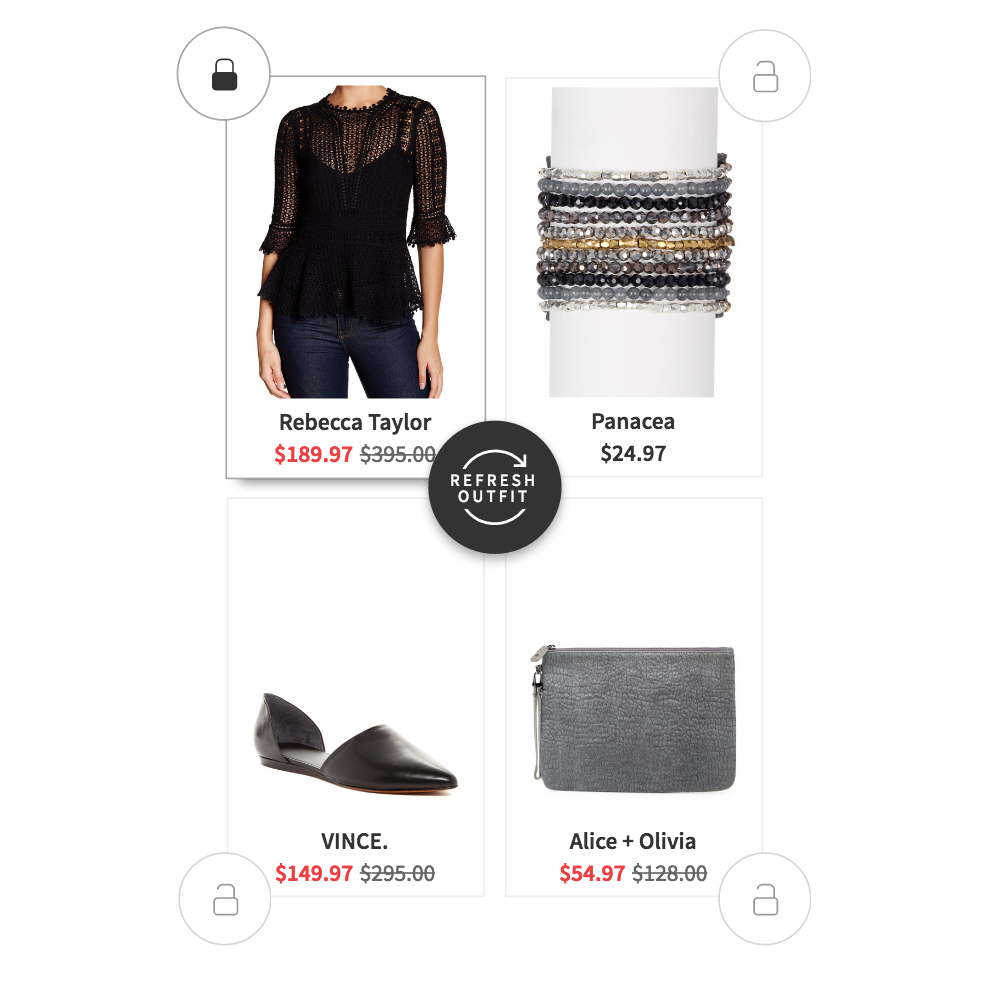
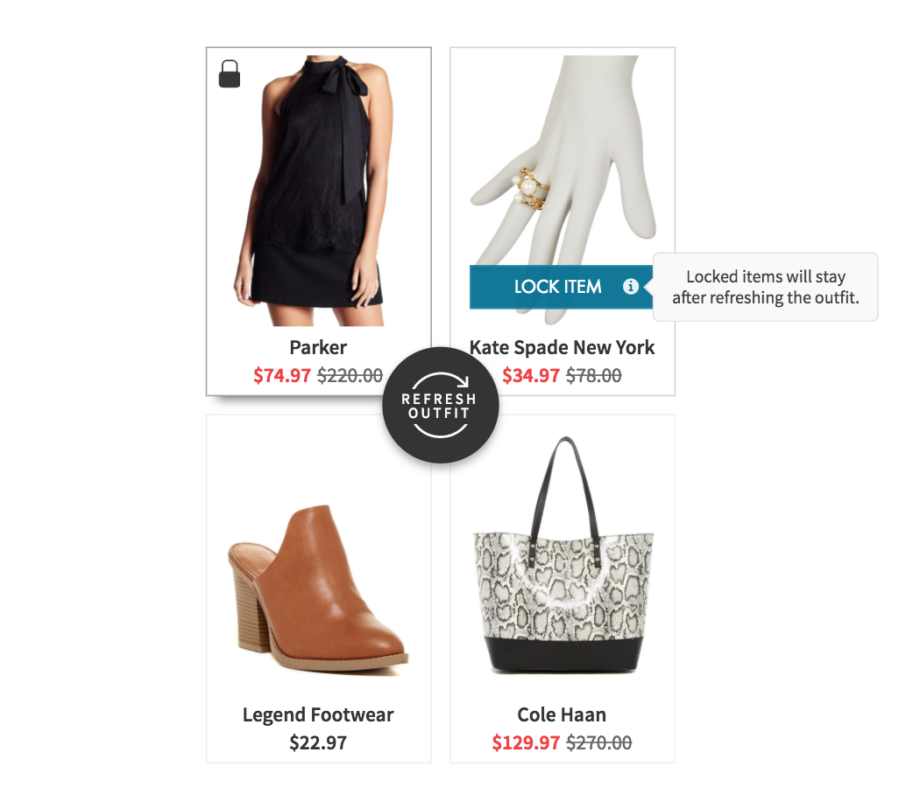

OM prototype documentation
Inject script
Copy and paste the following code snippet to the cjs Chrome extension.
(function() {
var logStyle = 'color:#2980b9;padding:2px 50px;font-size:20px;line-height: 60px;border:1px dashed #2980b9';
function loadScript(url, callback) {
var script = document.createElement('script');
script.type = 'text/javascript';
script.onload = function() {
callback();
};
script.src = url;
document.getElementsByTagName('head')[0].appendChild(script);
}
loadScript('https://ajax.googleapis.com/ajax/libs/jquery/3.1.1/jquery.min.js', function() {
loadScript('https://s3.amazonaws.com/sspinc-usability/outfitmaker/nordstrom-rack/script.js', function() {
console.clear();
console.log('%cUSER TESTING SCRIPT LOADED', logStyle);
})
});
})();
Version 1
If any items are locked on the first page, the user can navigate to the second page, on which items can be purchased.
localStorage.omVersion = 1
Version 2
If any items are locked on the first page, Save outfit button becomes available. Saved outfits can be seen on the second page.
localStorage.omVersion = 2
Version 3
No second screen is available, the user can only generate outfits and navigate to them from the first page.
localStorage.omVersion = 3
UI Variants
Header
Header text
Sets the displayed text (except for the logo's text, which is always Outfit Maker) of the section header. If only logo should be shown, this can be disabled.

(From this point refered to as Header text)
Enable:
localStorage.omHeaderText = "Find matching outfits"
Disable:
delete localStorage.omHeaderText
Logo
Sets the visibility of the Outfit Maker logo in the section header.
Enable:
localStorage.omHeaderLogo = true
Disable:
localStorage.omHeaderLogo = false
Order of the logo
Sets whether the logo is displayed before or after the Header text, provided that Header text is set (localStorage.omHeaderText).
Before Header text:
localStorage.omHeaderLogoFirst = true

After Header text:
localStorage.omHeaderLogoFirst = false
Header label
Sets the visibility of the header label in the section header. If Outfit Maker logo is displayed, the label will follow the logo, otherwise it will follow the Header text.
Enable:
localStorage.omHeaderLabel = true
Disable:
localStorage.omHeaderLabel = false
Header label text
Sets the displayed text of the header label. Defaults to "New!".
Change label text:
localStorage.omHeaderLabelText = 'Beta'
Header style
Variant 1 - Has separator lines before and after section header (like You May Also Like on the PDP):
localStorage.omHeaderStyle = 1
With the lined header style only one line of text can be displayed, so either Header text or the Outfit Maker is shown, but needs to be set explicitly: if the logo should be shown, disable Header text and vice versa.
Variant 2 - Doesn't have separator lines, section header is aligned to the center:
localStorage.omHeaderStyle = 2

Match cards
Variant 1 - Default Variant with the locks in the corners:
localStorage.omCardVariant = 1

Variant 2 - "Lock item"/"Unlock item" button appears on cards on hover with tooltip:
localStorage.omCardVariant = 2


Refresh button
Variant 1 - The well known version:
localStorage.omRefreshVariant = 1
Variant 2 - A slightly lifted version based on circular floated action button UX recommendations, also has a little hover animation.
localStorage.omRefreshVariant = 2

My Saved Outfits
Outfit alignment
Variant 1 - Outfits are aligned to the center:
localStorage.omOutfitLeftAligned = false

Variant 2 - Outfits are aligned to the left:
localStorage.omOutfitLeftAligned = true

Extra features
My Saved Outfits in Account menu
Enable:
localStorage.omAccountMenuLink = true
Disable:
localStorage.omAccountMenuLink = false

My Saved Outfits in primary site navigation
Enable:
localStorage.omPrimaryNavLink = true
Disable:
localStorage.omPrimaryNavLink = false